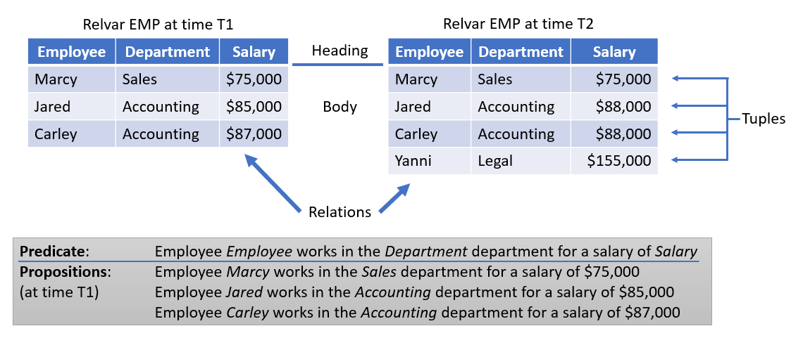
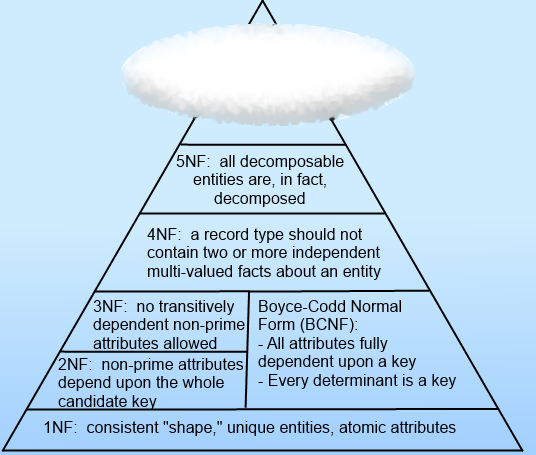
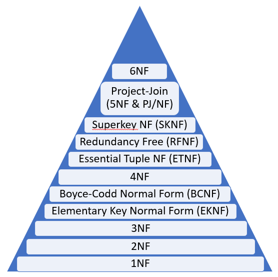
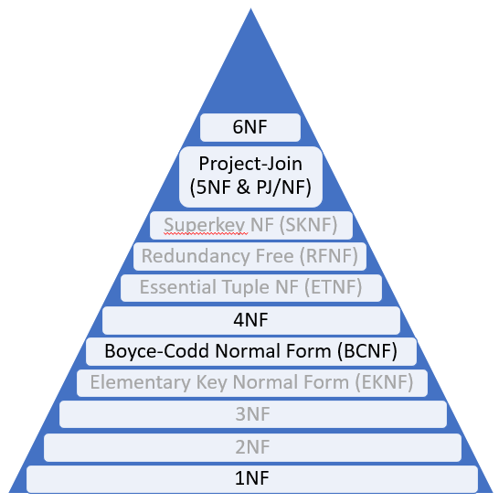
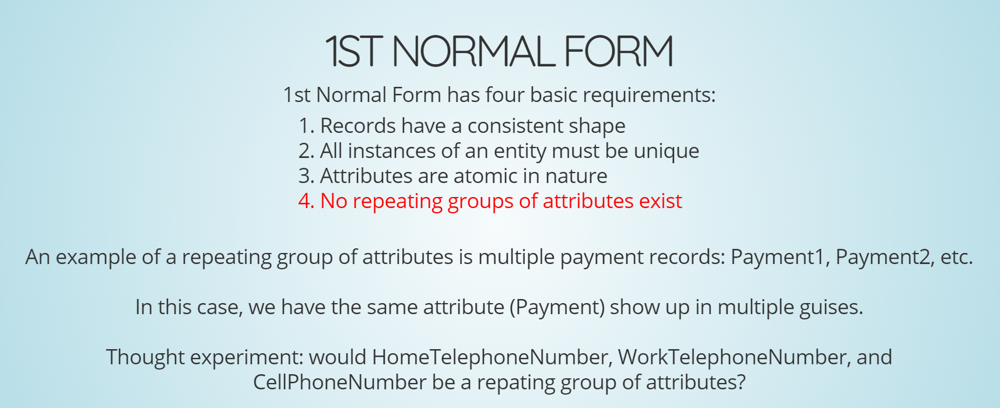
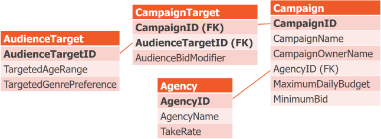

Perfectly Normal
An Advanced Primer on Normalization
Kevin Feasel (@feaselkl)http://CSmore.info/on/dbdesign
Who Am I? What Am I Doing Here?


Is This Talk Right for Me?
Have you ever believed any of the following?
- "Normalization isn't relevant in the business world."
- "Normalize until it hurts, denormalize until it works."
- "The main purpose of normalization is to minimize disk utilization by removing duplicate data."
- "Database design doesn't matter--add more hardware and that will fix the problem."
- "Getting to Third Normal Form is all you need to know about normalization."
- "Third Normal Form is important."
Motivation
My goals in this talk:
- Explain the basics behind database normalization.
- Dive into the two most important normal forms.
- Briefly cover other interesting normal forms.
- Cover critiques of normalization.
A Brief Warning
Normalization is a part of relational theory, meaning that there will be math and there will be discussions of formal logic.
I will do my best to minimize the learning curve, but we're ultimately solving math problems using logical analysis.
Also, some of these normal forms are not well-understood outside of academic circles and so your interpretation of the forms may not match what I'm going to describe.
The Source
The source of most of today's talk is C.J. Date's Database Design and Relational Theory, 2nd Edition (Apress, 2019).
Agenda
- The Basics
- 1NF
- BCNF
- 5NF
- 4NF
- 6NF
- Normalizaton and...
What is Normalization?
Normalization is a set of logical rules and processes to follow.
Normalization works off of a logical data model. From there, we can (theoretically) adapt to a physical data model for implementation.
Quick Primer on Terminology
We're used to thinking in terms of tables, rows, and columns. Let's take a step back and talk about the data modeling terms.
Goals of Normalization
- Remove redundant data
- Fix incorrect designs
- Achieve a design which is a good representation of the real world
- Simplify the statement and enforcement of certain integrity constraints
The Normal Forms
From a talk I used to deliver:
The Normal Forms
The Normal Forms We Will Care About
Normal Forms Ranked by Importance
- Most important: BCNF, 5NF
- Sometimes important: 6NF
- Overrated: 1NF, 4NF
- Rarely relevant: EKNF, ETNF, RFNF, SKNF, Overstrong PJ/NF
- Never relevant: 2NF, 3NF
Agenda
- The Basics
- 1NF
- BCNF
- 5NF
- 4NF
- 6NF
- Normalizaton and...
What 1NF Is
First normal form (1NF) is all about key rules and the shape of tuples.
Given relvar R with heading H containing attributes A1...An of types T1...Tn, all tuples follow heading H and have one value of type Ti for attribute Ai.
In Other Words
| UserName (CHAR) | Password (BINARY) | IsActive (BIT) |
|---|---|---|
| Bob | 0xABC123 | 1 |
| Jane | 0xCDA331 | 1 |
| Marcus | 0xFFF048 | 0 |
Adding a new tuple t(Jim, 0xBBA492, 1) requires that the new tuple's heading, with attributes and types, matches the existing relvar's heading.
The Rules on 1NF
First normal form (1NF) has a few rules:
- New tuples match the existing relvar's heading.
- All tuples must have values for all attributes. This means NULL violates 1NF!
- No duplicate tuples are allowed
- Attribute order does not matter for tuples
- Tuple order does not matter for relations
- All attributes are regular: they have a name, a type, are not hidden, etc.
Repeating Groups
Quite commonly, depictions of 1NF will discuss the concept of "repeating groups."
An example of a relvar with a repeating group is:
R = (Name, Phone1, Phone2, Phone3)
Is this in 1NF?
From a talk I used to deliver:
What We Know That Just Isn't So
R = (Name, Phone1, Phone2, Phone3)
The answer is YES! This relvar is in 1NF!
"Repeating groups" is a term Date came up with and has subsequently recanted. The term itself was confusing and the above interpretation is something he did not intend. His latest advice is to ignore any reference to repeating groups.
Are SQL Tables in 1NF?
SQL tables can be in 1NF.
Also, SQL tables are trivially not in 1NF because they can't otherwise be.
- New tuples match the existing relvar's heading.
All tuples must have values for all attributes. NULL violates 1NF!
No duplicate tuples are allowed
Attribute order does not matter for tuples
- Tuple order does not matter for relations
All attributes are regular: they have a name, a type, are not hidden, etc.
Agenda
- The Basics
- 1NF
- BCNF
- 5NF
- 4NF
- 6NF
- Normalizaton and...
The Importance of BCNF
Boyce-Codd Normal Form is one of the two most important normal forms. It prevents a variety of data anomalies:
- Update anomalies
- Redundant data (some types)
- Missing data
We Have Data
| Specialist | Project | Task | Login |
|---|---|---|---|
| Julia | ETL | Write scripts | JuliaH |
| Lindsay | Analysis | Build spark cluster | LindsayM |
| Lindsay | ETL | Write scripts | LindsayM |
Update Anomalies
Lindsay gets married and changes her last name. But we miss it in one project.
| Specialist | Project | Task | Login |
|---|---|---|---|
| Julia | ETL | Write scripts | JuliaH |
| Lindsay | Analysis | Build spark cluster | LindsayJ |
| Lindsay | ETL | Write scripts | LindsayM |
Redundant Data
Ann comes off the bench to do all the ETL work. Let's update the database.
| Specialist | Project | Task | Login |
|---|---|---|---|
| Ann | ETL | Write scripts | AnnB |
| Lindsay | Analysis | Build spark cluster | LindsayJ |
| Ann | ETL | Write scripts | AnnB |
Missing Data
Where was Ann? How do we make her visible when she's on the bench?
| Specialist | Project | Task | Login |
|---|---|---|---|
| Julia | ETL | Write scripts | JuliaH |
| Lindsay | Analysis | Build spark cluster | LindsayJ |
| Lindsay | ETL | Write scripts | LindsayJ |
| Ann | NONE | Placeholder | AnnB |
Boyce-Codd Normal Form Defined
We can define BCNF as:
All functional dependencies have superkey determinants.
Superkey: a unique combination of attributes, but not necessarily the most parsimonious unique combination of attributes. If (A1, A2) is a key, (A1) is a subkey and (A1, A2, A3) is a superkey.
Functional Dependencies
Suppose we have some attribute Z.
The value of Z depends on inputs X and Y:
| X | Y | Z |
|---|---|---|
| 1 | 4 | 7 |
| 3 | 5 | 2 |
| 1 | 4 | 7 |
| 6 | 8 | 7 |
Functional Dependencies
When we see X=1 and Y=4, we know Z=7.
In other words, X and Y determine Z, or (X, Y) is the determinant for Z.
In mathematical terms, we can write this as (X, Y) -> Z.
Boyce-Codd Normal Form Reviewed
All functional dependencies have superkey determinants.
- Superkey: key and maybe more.
- Functional dependency: strict relationship between attributes.
- Determinant: "input(s)" for the functional dependency.
Relvars in BCNF are guaranteed to suffer from none of the anomalies we just described!
Finding Determinants
"Deductive" techniques:
- Look for common prefixes, such as UserID and UserName
- Look at what "belongs" to an object, e.g., a password on a User relvar versus a password on a UserLoginAttempt relvar
- Look for equivalences and mathematical formulas, e.g., SubTotal, Tax, Total
- Discuss with product owners and stakeholders what things belong together
Finding Determinants
"Inductive" techniques:
- Look for common patterns in the data
- Count of distinct values for attribute combinations
- Build a correlation matrix for combinations of attributes
The Solution, Step 1
Start with a relvar whose heading has all attributes. Figure out the candidate key(s) and functional dependencies for this relvar.
| CampaignID | CName, COName, AgencyID, MaxBudget, MinBid |
| AgencyID | AName, TakeRate |
| AudienceTargetID | TAgeRng, TGenPref |
| CampaignID, AudienceTargetID | AudienceBidModifier |
The Solution, Step 2
Next, ask this question: are all determinants candidate keys? The answer is obviously no. Only the final determinant is.
| Determinant | Dependency |
|---|---|
| CampaignID | CampaignName, CampaignOwnerName, AgencyID, MaximumDailyBudget, MinimumBid |
| AgencyID | AgencyName, TakeRate |
| AudienceTargetID | TargetAgeRange, TargetGenrePreference |
| CampaignID, AudienceTargetID | AudienceBidModifier |
Intermission: Heath's Theorem
Let's introduce Heath's theorem here:
Given a relvar R with components { X, Y, Z }, as well as functional dependency X --> Y, we can break R into two relvars, containing { X, Y } and { X, Z }, without loss.
The Solution, Step 3
If the answer to Step 2 was no, take a non-candidate key determinant and break it out into its own relvar, following Heath's theorem.
The Solution, Again
Repeat steps 2 and 3 as long as there are more functional dependencies which are not candidate keys. Let's take CampaignID next.

The Solution, Again Again
Our remaining functional dependencies are:
| Determinant | Dependency |
|---|---|
| AudienceTargetID | TargetAgeRange, TargetGenrePreference |
| CampaignID, AudienceTargetID | AudienceBidModifier |
This is not good enough! AudienceTargetID is a subkey of the candidate key, not a superkey! Therefore, break it out.
The End Result
Here is our final data model, in BCNF. Also, I took the opportunity to rename the DM Campaign relvar to CampaignTarget, which better represents its meaning.
Where BCNF Breaks Down
Boyce-Codd Normal Form is great for most scenarios, but it does fall apart in one particular case: when there are cycles in functional dependencies.
Suppose we have a relvar with heading { S, J, T }. These attributes represent Students, Subjects, and Teachers, respectively.
Given a functional dependency T -> J, we can break this out into { S, T } and { T, J }
Where BCNF Breaks Down
Relvar with heading { S, J, T }
Functional dependency T -> J
Now if we include a functional dependency S, J -> T, it all falls apart.
{ S, T } + { T, J } doesn't work--T also depends on { S, J }!
But T is not a superkey of { S, J, T } so all keeping all three won't work either.
Agenda
- The Basics
- 1NF
- BCNF
- 5NF
- 4NF
- 6NF
- Normalizaton and...
Fifth Normal Form (5NF)
Fifth Normal Form is the second most-important normal form. What BCNF is to functional dependencies, 5NF is to join dependencies
Relvar R is in 5NF if and only if every join dependency in R is implied in the keys of R.
Join Dependency: if X1, X2, ..., Xn are the subsets of heading H on relvar R, a join dependency holds in R if and only if R can be non-loss decomposed into its projections on X1, X2, ..., Xn.
A Quick Example
Suppose we have a relvar called Suppliers with FDs { SupplierID -> SupplierName, City } && { City -> Status }.
| SupplierID | SupplierName | City | Status |
|---|---|---|---|
| 1 | S1 | Chicago | 10 |
| 2 | S2 | Lafayette | 20 |
| 3 | S3 | Chicago | 10 |
| 4 | S4 | Lexington | 10 |
| 5 | S5 | Lafyette | 20 |
A Quick Example
A join dependency says we can break this relvar into at two components and reconstitute it without loss: S = { SupplierID, SupplierName, City }; C = { City, Status }
| SupplierID | SupplierName | City |
|---|---|---|
| 1 | S1 | Chicago |
| 2 | S2 | Lafayette |
| 3 | S3 | Chicago |
| 4 | S4 | Lexington |
| 5 | S5 | Lafyette |
| City | Status |
|---|---|
| Chicago | 10 |
| Lafayette | 20 |
| Lexington | 10 |
In Other Words...
Functional dependencies are join dependencies.
But not all join dependencies are functional dependencies!
BCNF and 5NF
A relvar R is in 5th Normal Form if it is in Boyce-Codd Normal Form and the relvar has no composite keys.
A relvar may be in BCNF but not 5NF if there is a composite key and there are non-functional join dependencies which are not key-based.
The Connection Trap
Suppose we have the following rules:
- IF an Agent (A) sells a Product (P)...
- AND (A) represents a Company (C)...
- AND (C) offers (P)...
- THEN (A) sells (P) for (C)
This is also known as a symmetric constraint. If this does not apply, then we fall into the connection trap.
No Connection Trap
In this setup, if all three attributes are necessary to determine which combinations are valid and which are not, then we are in 5NF.
| Agent | Company | Product |
|---|---|---|
| Smith | Ford | Car |
| Smith | GM | Truck |
No Connection Trap
| Agent | Company | Product |
|---|---|---|
| Smith | Ford | Car |
| Smith | Ford | Truck |
| Smith | GM | Car |
| Jones | Ford | Car |
Now, we see two agents (Smith and Jones) who sell various products for Ford and GM. Ford manufactures cars and trucks, whereas GM only manufactures cars.
If we have a rule in which company salesmen sell all company products, then we can decompose this entity further.
We then have a JD: *{ {A, C}, {C, P}, {A, P} }
No Connection Trap
| Agent | Company |
|---|---|
| Smith | Ford |
| Smith | GM |
| Jones | Ford |
| Agent | Product |
|---|---|
| Smith | Car |
| Smith | Truck |
| Jones | Car |
| Company | Product |
|---|---|
| Ford | Car |
| Ford | Truck |
| GM | Car |
As long as our symmetric constraint holds, everything is fine. But what happens if GM starts to sell trucks?
No Connection Trap
| Agent | Company |
|---|---|
| Smith | Ford |
| Smith | GM |
| Jones | Ford |
| Agent | Product |
|---|---|
| Smith | Car |
| Smith | Truck |
| Jones | Car |
| Company | Product |
|---|---|
| Ford | Car |
| Ford | Truck |
| GM | Car |
| GM | Truck |
Now this means that Smith must begin to sell GM trucks.
The Connection Trap in Action
Now let's say that there is no such symmetric constraint. We start with similar data, though note that Jones sells GM trucks instead of cars.
| Agent | Company | Product |
|---|---|---|
| Smith | Ford | Car |
| Smith | Ford | Truck |
| Smith | GM | Car |
| Jones | GM | Truck |
The Connection Trap in Action
| Agent | Company |
|---|---|
| Smith | Ford |
| Smith | GM |
| Jones | GM |
| Agent | Product |
|---|---|
| Smith | Car |
| Smith | Truck |
| Jones | Truck |
| Company | Product |
|---|---|
| Ford | Car |
| Ford | Truck |
| GM | Car |
| GM | Truck |
We've broken this out. But is it correct?
Nope! This says that Smith sells GM trucks, but that's not true!
Why Bother?
If 5NF seems like overkill, here are a few reasons why it can be important.
- With no composite keys, BCNF is 5NF, so you're already good.
- Relvars not in 5NF can suffer from deletion anomalies and insertion anomalies.
- Symmetric constraints aren't extremely common, but there is a common variant which you'll want to think about.
Agenda
- The Basics
- 1NF
- BCNF
- 5NF
- 4NF
- 6NF
- Normalizaton and...
Fourth Normal Form (4NF)
Fourth Normal Form is an anachronism--it's really just a subset of 5NF.
Relvar R is in 4NF if and only if every Multi-Valued Dependency of R is implied in the keys of R.
Multi-Valued Dependency: a join dependency with exactly two components.
Multi-Valued Dependencies
Suppose the following:
- Course
CNOcan be taught by teacherTNOusing textbook XNO - Each course c has a set T of teachers who can teach it and a set X of textbooks it uses
- For each course c, there is a tuple for every combination of teacher t and textbook x
Multi-Valued Dependencies
| CNO | TNO | XNO |
|---|---|---|
| C1 | T1 | X1 |
| C1 | T1 | X2 |
| C1 | T2 | X1 |
| C1 | T2 | X2 |
*{ {CNO, TNO}, {CNO, XNO} }
CNO ->-> TNO && CNO ->-> XNO, or CNO ->-> TNO|XNO
Fagin's Theorem
Relvar R can be nonloss decomposed into its componentsXYandXZif and only ifX->->Y|Zholds in R.
In other words, if there are multiple, independent attributes, split them out into separate relvars.
Solving for 4NF
Suppose Mr. Smith has two skills: he can cook and he can type.
Furthermore, he is fluent in German, French, and Greek.
How do we represent this information?
Bad Solution #1: Disjoint Format
| Employee | Skill | Language |
|---|---|---|
| Smith | Cook | |
| Smith | Type | |
| Smith | French | |
| Smith | German | |
| Smith | Greek |
Problems:
- What do blanks actually mean?
- What if Mr. Smith didn't know any languages?
Bad Solution #2: Minimal (with NULL)
| Employee | Skill | Language |
|---|---|---|
| Smith | Cook | French |
| Smith | Type | German |
| Smith | Greek |
Problems:
- Can Mr. Smith cook French cuisine and type in German?
- What can Mr. Smith do in Greek?
- What if Mr. Smith forgets German?
Bad Solution #3: Minimal (with repetition)
| Employee | Skill | Language |
|---|---|---|
| Smith | Cook | French |
| Smith | Type | German |
| Smith | Type | Greek |
Problems:
- Can Mr. Smith cook French cuisine and type in German and Greek?
- What if Mr. Smith forgets German?
- What if Mr. Smith forgets how to type?
- What if Mr. Smith forgets French?
Bad Solution #4: Unrestricted
| Employee | Skill | Language |
|---|---|---|
| Smith | Cook | French |
| Smith | Type | |
| Smith | German | |
| Smith | Type | Greek |
Problems:
- How do we even understand this data?
- We have NULL values, repetition, and confusing combinations all at the same time
Good Solution
| Employee | Skill |
|---|---|
| Smith | Cook |
| Smith | Type |
| Employee | Language |
|---|---|
| Smith | French |
| Smith | German |
| Smith | Greek |
{ E, S, L }was good enough for BCNF ({ E, S, L }was the candidate key) but not good enough for us.- The join dependency
*{ {E, S}, {E, L} }needed to be broken out.
Agenda
- The Basics
- 1NF
- BCNF
- 5NF
- 4NF
- 6NF
- Normalizaton and...
Sixth Normal Form
Relvar R is in Sixth Normal Form (6NF) if and only if all join depdenencies which hold in R are trivial.
In other words, there may be one non-key attribute in addition to the key.
An Example
Suppose we have a relvar { ProductKey, ProductName, ProductColor, ProductWeight, StorageCity }. Furthermore, our natural key is ProductKey. This relvar is in 5NF (BCNF + non-composite key) and can be made 6NF in the following way:
{ ProductKey, ProductName }
{ ProductKey, ProductColor }
{ ProductKey, ProductWeight }
{ ProductKey, StorageCity }
An Example
Note that each of these new relvars has a simple predicate (natural-language depiction of a relvar's utility) with no "AND":
| Relvar | Predicate |
|---|---|
{PK,ProductName} |
Product PK has name ProductName. |
{PK,ProductColor} |
Product PK has color ProductColor. |
{PK,ProductWeight} |
Product PK has weight ProductWeight. |
{PK,StorageCity} |
Product PK is stored in city StorageCity. |
Do We Need 6NF?
Maybe!
- If an attribute always has a value, it's better to cluster these attributes together.
- If an attribute may be missing, it might be better to break it out into 6NF (to avoid NULL).
Suppose we might not always have product weight. Then we'd have:
{ ProductKey, ProductName, ProductColor, StorageCity }
{ ProductKey, ProductWeight }
Do We Need 6NF?
6NF works best with intervals of data. Usually this is temporal data. Example:
| SupplierKey | City | Interval |
|---|---|---|
| Supplier1 | London | D4:D8 |
| Supplier2 | Paris | D3:D3 |
| Supplier2 | Athens | D5:D10 |
Do We Need 6NF?
Suppose we have an SCD2 style table:
| SupplierKey | City | Assistants | Interval |
|---|---|---|---|
| Supplier1 | London | 4 | D1:D8 |
| Supplier1 | London | 5 | D9:D14 |
| Supplier1 | Paris | 5 | D15:D17 |
| Supplier2 | Athens | 3 | D1:D17 |
| Supplier2 | Athens | 4 | D18:D18 |
Do We Need 6NF?
Break it into 2 non-redundant relvars:
| SupplierKey | City | Interval |
|---|---|---|
| Supplier1 | London | D1:D14 |
| Supplier1 | Paris | D15:D17 |
| Supplier2 | Athens | D1:D18 |
| SupplierKey | Assistants | Interval |
|---|---|---|
| Supplier1 | 4 | D1:D8 |
| Supplier1 | 5 | D9:D17 |
| Supplier2 | 3 | D1:D17 |
| Supplier2 | 4 | D18:D18 |
To bring these back together, unpack on Interval, join together elements, and re-pack on Interval. This is a gaps & islands problem!
Agenda
- The Basics
- 1NF
- BCNF
- 5NF
- 4NF
- 6NF
- Normalizaton and...
Normalization and Data Warehousing
Relational theorists like Date tend not to like the Kimball model very much. As a general-purpose relational model, the star schema is terrible.
It is, however, a great model for data warehousing if you follow certain rules:
- One and only one process to write data
- The model is a proper model of business processes and understanding
- Facts represent measurements of things
- Dimensions represent further information about things
- The appropriate slowly-changing dimension type is used for each dimension
Normalization and Overnormalization
Overnormalization isn't really a thing. What people tend to see as overnormalization tend to be one of the following:
- Trying to remove legitimate business flexibility
- Lossy decomposition and phantom rows
Normalization and Denormalization
Normalization has very specific rules: you can tell where you are and what you'd need to do to get to the next level. With denormalization, how can we answer the following questions?
- Denormalize to what extent?
- Which method(s) should I use to denormalize these relvars?
- Is my data model sufficiently denormalized?
- Has my data model been denormalized correctly?
Normalization and Denormalization
General philosophy:
- Denormalizing to increase redundancy can be okay when needed. Ex: data warehousing.
- Denormalization can add invalid design ideas back in--avoid those at all costs.
Normalization and Its Discontents
Normalization is not the end-all of relational design.
- Join dependencies and functional dependencies are not the only kinds of constraints, and normalization will not help with these others
- Multiple non-loss decompositions into 5NF may be possible, but there is no formal guidance on which to choose
- Applying academic advice to practical circumstances is not always a direct mapping
- Normalization is explicitly about the logical model, not the physical model
Wrapping Up
This has been a look at normalization from an academic perspective. This can be a complicated topic and I've tried to straddle the line between formal correctness and ease of explanation.
Wrapping Up
To learn more, go here:
https://CSmore.info/on/dbdesign
And for help, contact me:
feasel@catallaxyservices.com | @feaselkl
Catallaxy Services consulting:
https://CSmore.info/on/contact